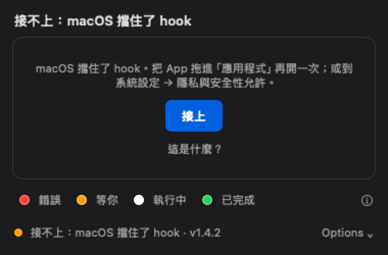
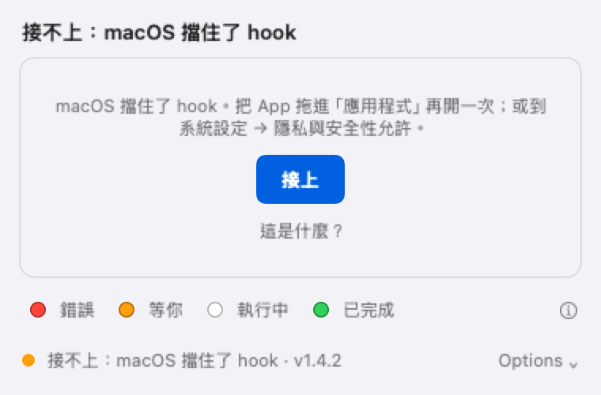
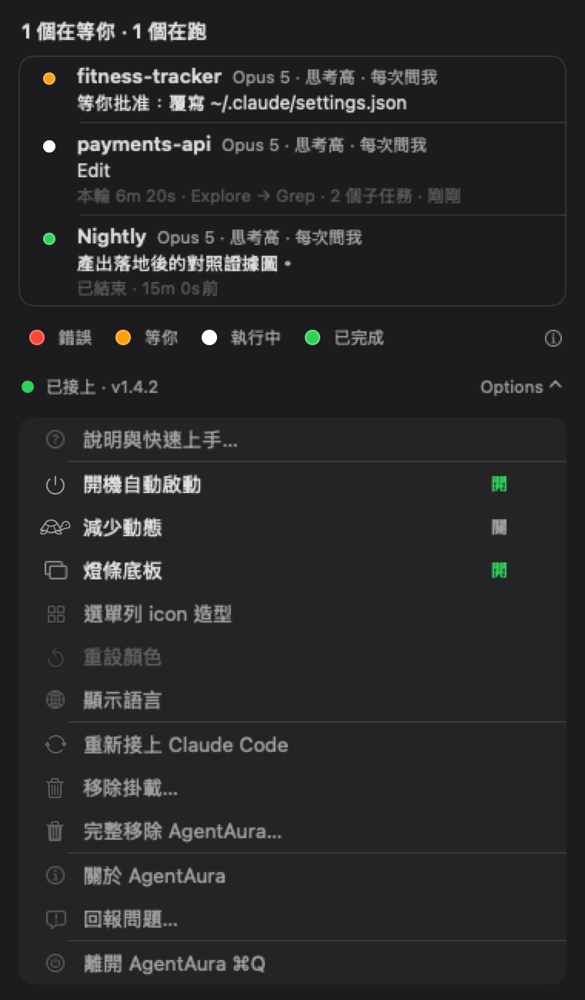
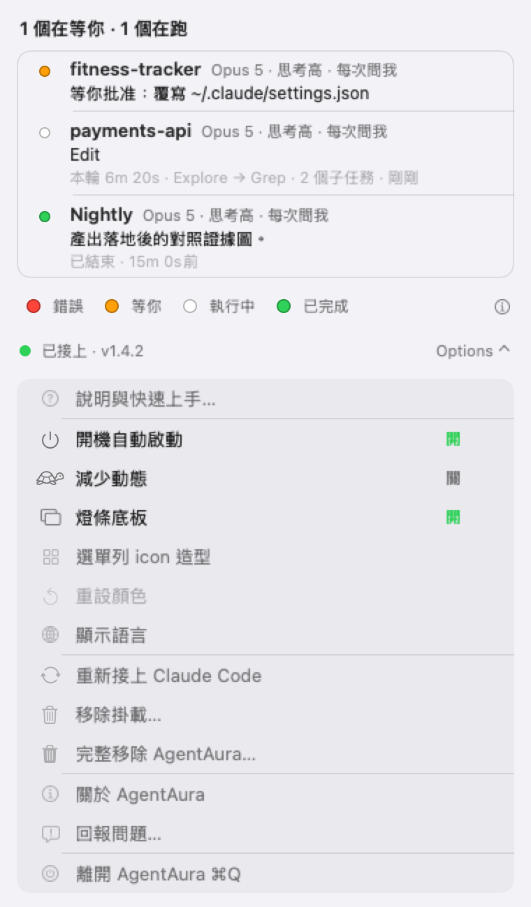

公開版註記（2026-09-16）：V1／V2／V3 三個原型渲圖在 repo 轉為公開時移除——它們是在去識別化之前渲的，圖裡燒著真實專案名稱，而產生它們的變體程式碼在決策完成後 就已經不在 codebase 裡，無法重渲。決策結論與逐項評分見 docs/2026-09-09-m4-ab-decision.md；下面保留的是 V1 落地後的實際樣子（已重新渲過）。
V1
V2
V3
docs/2026-09-09-m4-ab-decision.md



